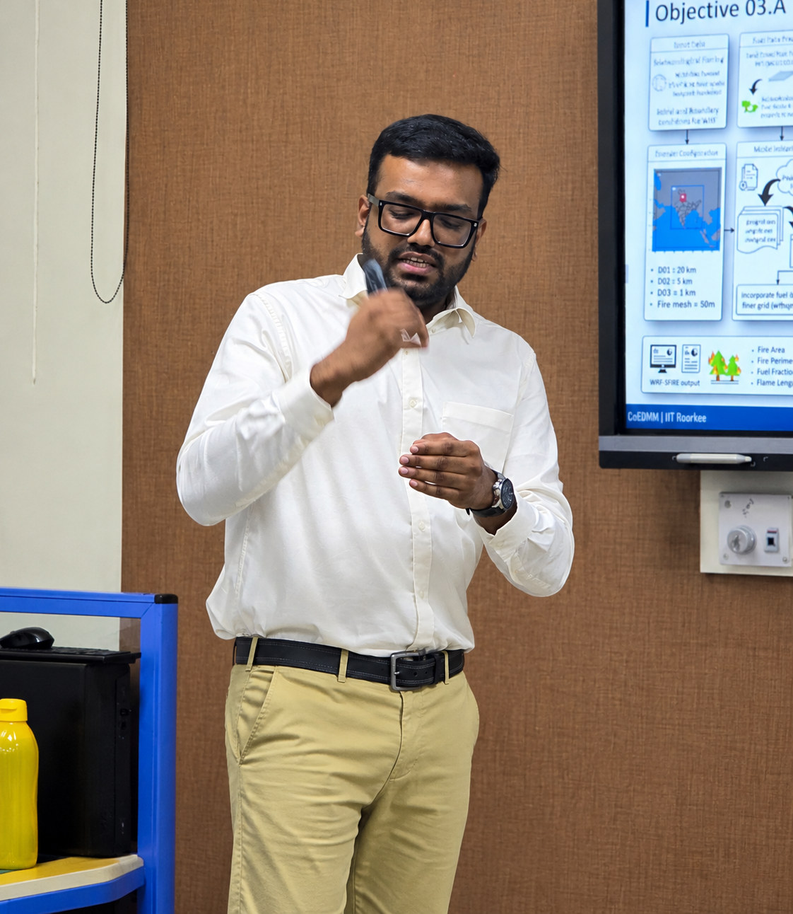

About me
PhD researcher working on forest fire early warning and numerical weather prediction.

Research in a few lines
I am a PhD researcher at the Centre of Excellence in Disaster Mitigation and Management (CoEDMM), Indian Institute of Technology Roorkee. My PhD thesis is titled “Modelling and Analysis of Atmospheric Conditions Conducive to the Spread of Wildfires over Mountainous Region in India”.
The work combines numerical weather prediction models with observational and reanalysis datasets. I also work on tropical cyclones and on disasters induced by climate change.
I was born and raised in Kollam district, Kerala.
As part of my PMRF deliverables and science communication, I conduct and organise workshops, science communication lectures and other lectures at universities and colleges across India. The topics include the application of numerical weather prediction models, including the WRF model, followed by programming and data analysis with Python, R and Origin Pro, disaster mitigation and management, climate change, and wildfire spread and analysis using geospatial and other computational tools.
- Forest fire modelling
- Numerical weather prediction model
- Fire weather severity and indices
- Weather and climate change induced disasters
- Position
- PhD researcher, CoEDMM, IIT Roorkee
- Fellowship
- Prime Minister's Research Fellowship (PMRF) since January 2023. MoE JRF fellow from July to December 2022. Raman-Charpak fellow from July to December 2025.
- Scholarship
- INSPIRE-SHE Scholarship, Department of Science and Technology, 2015 to 2020.
- Education
- BS-MS in Geological Sciences, IISER Kolkata
- Supervisor
- Prof. Piyush Srivastava, Assistant Professor, Centre of Excellence in Disaster Mitigation & Management, Indian Institute of Technology Roorkee
Fellowships and scholarships
In chronological order.
INSPIRE-SHE scholar
Scholarship from the Department of Science and Technology, 2015 to 2020.
MoE JRF fellow
July to December 2022.
PMRF fellow
PhD researcher at CoEDMM, IIT Roorkee, supported by the PMRF since January 2023.
Raman-Charpak fellow
July to December 2025.
Academic background
Degrees, most recent first.
- 2022 - present
- PhD in Disaster Mitigation and Management
Centre of Excellence in Disaster Mitigation and Management, Indian Institute of Technology Roorkee - 2015 - 2020
- BS-MS Dual Degree in Geological Sciences
Indian Institute of Science Education and Research Kolkata - 2013 - 2015
- Higher Secondary Education
Sivaram NSS HSS, Karicode, Kollam, Kerala
Research experience
Research projects and internships.
- 2022 - present
- Weather and Climate Research Group, IIT Roorkee
Modelling and Analysis of Atmospheric Conditions Conducive to the Spread of Wildfires over Mountainous Region in India. - 2025
- CEFE-CNRS, Montpellier
Fire weather indices over the Mediterranean and the Indian Himalayas, July to December 2025. - 2024
- Workshop on Data Assimilation in Weather and Climate models
Two-week training workshop attended, 6 to 17 May 2024, ICTS Bengaluru. - Final year
- ACARR, CUSAT
Final year project on the increasing frequency of cyclonic storms over the Arabian Sea. - Summer 2017
- CGMLI, IISER Bhopal
Impact of heatwaves in Indian metropolitan cities, under Dr. Pankaj Kumar. - Summer 2016
- ACARR, CUSAT
Planetary boundary layer over the Gateway of the Indian Monsoon in Cochin, under Prof. K. Mohankumar and Dr. M. G. Manoj.
Honours and awards
Fellowships and scholarships held.
- 2025
- Raman-Charpak Fellowship
Fellowship for India-France research collaboration, July to December 2025. - 2022
- Prime Minister's Research Fellowship (PMRF)
Cycle 10, December 2022, lateral entry. - 2022
- MoE JRF
Junior research fellowship for doctoral research, July to December 2022. - 2015 - 2020
- INSPIRE-SHE Scholarship
Scholarship awarded by the Department of Science and Technology, 2015 to 2020.
Qualifying examinations
National and state eligibility tests cleared.
- 2024
- UGC-NET in Disaster Mitigation and Management
- 2022
- Graduate Aptitude Test in Engineering (GATE), Geology
- 2022
- Kerala State Eligibility Test (KSET), Geology, January 2022
Professional memberships
Scientific societies I belong to.
- Member
- American Geophysical Union (AGU)
International scientific society for Earth and space sciences. - Member
- International Association of Wildland Fire (IAWF)
Worldwide membership association of wildland fire specialists. - Member
- Association for Fire Ecology (AFE)
Professional association for fire ecology and fire science.
Work experience
Part-time online roles, 2020 to 2022.
- 2020 - 2022
- Chegg Q&A expert in Earth Sciences
Part-time. Answered Earth science questions from students. - 2020 - 2022
- Course Hero tutor in Earth Sciences
Part-time. Tutored students in Earth science courses.